← 返回阅读库 · 原论文目录
论文讲解阅读文档 · 新模型 · v082
X3D Expanding Architectures for Efficient Video Recognition[2004.04730]
视频时长 00:04:06；讲解文字 1,811 字符；提取讲解画面 15 张。按视频原顺序阅读，每段文字保留时间戳。
文字来自整段视频的自动语音转写，按自然停顿分段，并与 PPT / 论文页面 / 演示画面对齐。未将讲解压缩为摘要；术语、数字和口述公式请结合画面及原论文核对。 阅读稿已校正规范部分明确术语误识别；原始逐字稿和每处修改记录另行保留。
讲解画面为源视频截图（640×360），不是可编辑 PPT 文件。全片按每秒 2 帧扫描内容变化，逐步展开页保留；连续动画保留代表画面。清晰度受源视频限制。
下载完整资料包 · 含离线 HTML、PDF、Word、全部 PPT 画面和字幕。
原论文与材料
X3D: Expanding Architectures for Efficient Video Recognition · 下载完整 PDF（14 页）
按时间阅读
00:00:00–00:00:22 · 画面 001
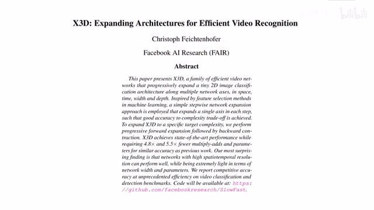
00:00:00–00:00:22 · 画面 001大家好，今天我们来快速水平论文 X3Dexpanding Architectures for Efficient Video Recognition。这篇论文的核心思想呢，就是从一个小的 2D 的这个 image classifier 开始呢，一步一步的把这个模型扩大，最后呢，让它变成一个很高效的视频理解啊，还有动作识别这样的一个网络结构。那么可以看到呢，假如你拿了一个这个 2D 的 image classifier
00:00:22–00:01:10 · 画面 002
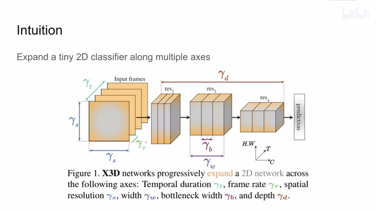
00:00:22–00:01:10 · 画面 002然后呢，你现在呢要让它处理视频，你就需要对它在各个维度上进行扩充。这里呢，作者为我们选择了六个维度。首先第一个，因为你处理的是视频嘛，所以你原来处理一帧肯定不行了，你要处理很多帧。那么其次呢，随着你的网络能同时处理的帧数增加了，你考虑一下这个帧率是不是也该增加点，这样我们能更密集的从视频中采样。那么当然了，这个 spatial resolution 处理更高清的视频width 呢，就是我们的 channel 的数量，而这个 bottleneck width 呢，是我们的 residual block 里面它的 channel 的数量。那么最后呢，这个 depth 呢，就是网络的深度了。那么这样看其实视频理解非常简单对吧，你有一个 2D 的 image classifier，把它按照这个六个轴给它扩充一下，最后增加一点细节啊，那你就能得到一个好的结果了。那么随后我们来看作者是具体怎么样实现这样一个扩增的吧。那么首先呢，这是我们一开始说到的，我们要有一个 2D 的 image classifier
00:01:10–00:01:11 · 画面 003
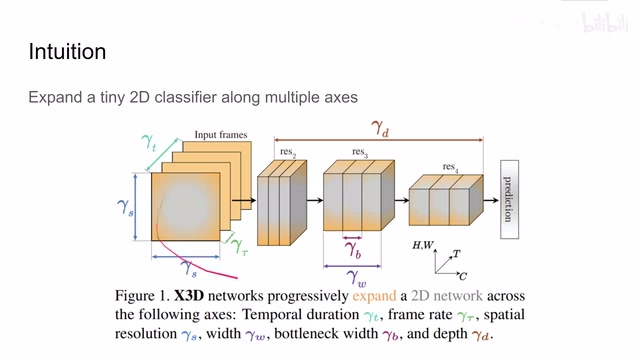
00:01:10–00:01:11 · 画面 00300:01:11–00:01:15 · 画面 004
00:01:11–00:01:15 · 画面 00400:01:15–00:01:18 · 画面 005
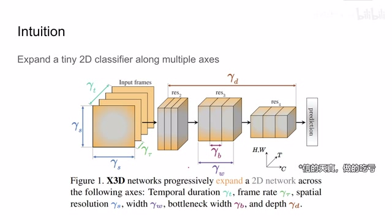
00:01:15–00:01:18 · 画面 00500:01:18–00:01:20 · 画面 006
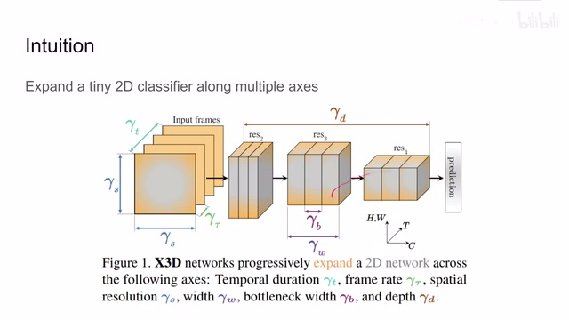
00:01:18–00:01:20 · 画面 00600:01:20–00:01:54 · 画面 007
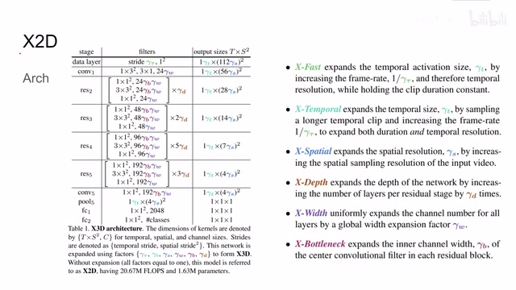
00:01:20–00:01:54 · 画面 007它在这里被作者称为 X2D，它的结构大概是长这个样子，这里面所有的这些扩大的参数全部都是 1。你可以看到它的结构其实很像 slow fast 里面的 fast network，但是与 fast network 相区别的是，我们这个网络它一次只处理一张图像，而不是像 fast network 一样它处理很多张。然后我们进行扩展，我们可购上的项目，我们刚刚已经介绍过了有这六个项目那最后呢，就是我们怎么样扩展这个网络的问题了。这里呢，作者说我们每次扩展呢，使我们的这个模型的复杂度呢，扩展两倍。从我们最开始的模型出发呢，因为我们有六个轴，所以呢，我们单独在每个轴方向上按照我们相应的计算的需求，也就是扩大两倍计算的需求，只对这一个轴进行扩展。那么这样子呢，我们从一个模型里面就得到了六个模型。那么具体每个轴的扩展倍率呢，作者这里给了我们一个大致的参考
00:01:54–00:02:21 · 画面 008
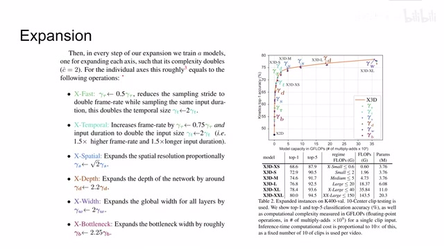
00:01:54–00:02:21 · 画面 008那么现在呢，你从原来的点出来，你有 6 个这样的模型了。那你对它们训练好的进行评价，选一个最好的，然后呢，再做下一步迭代就可以了。那么这里呢，注意有两个小细节，第一个就是呢，那么这里呢，我们有两个小细节，第一个就是呢，你沿着某一个轴按照一定参数去扩大我们的模型，它未必能够准确的达到我们的计算量，有可能没达到两倍计算量的要求，或者有可能超了一点。这个时候呢，你要做细微的调整，很可能呢，需要稍微的收缩一下我们的这个模型
00:02:21–00:02:22 · 画面 009
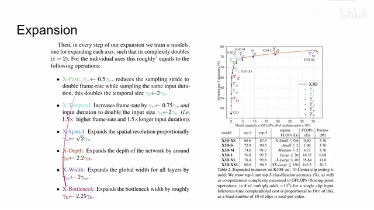
00:02:21–00:02:22 · 画面 00900:02:22–00:03:16 · 画面 010
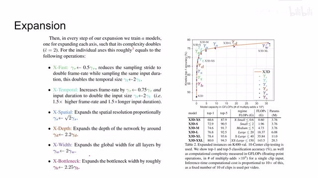
00:02:22–00:03:16 · 画面 010那么其次就是，随着我们模型的增大，我们需要增加的 Regularization 也要逐渐的变强。这里当你观察到你的 Validation 和 Test Results 相差的比较大，这个时候你就要开始对 Regularization 来进行调整了，甚至 Batch Size 都要调整。那么右边你可以看到，这是作者扩展出来的一堆模型，它们的计算复杂度是两倍两倍的增加的，当然准确率也是逐渐的提升的
00:03:16–00:03:31 · 画面 011
00:03:16–00:03:31 · 画面 011那么最后呢，我们快速的过一下本文的结果，主要就是这个视频识别还有后面的动作识别的，作者也汇报了一些实验结果，这里呢就不放了。那么这里呢，作者对标的是我们的 EfficientNet3DEfficientNet 的系列呢，我们都很熟悉了。这里呢，是作者汇报了一些数字，右边呢，是当时一些主流的视频理解的方法，甚至包括 Pretrain 的方法。那么你可以看到呢，随着模型数量的扩大呢，本文的方法 outperform 我们之前的这些方法。总的来说呢，老子曾经讲过
00:03:31–00:03:34 · 画面 012
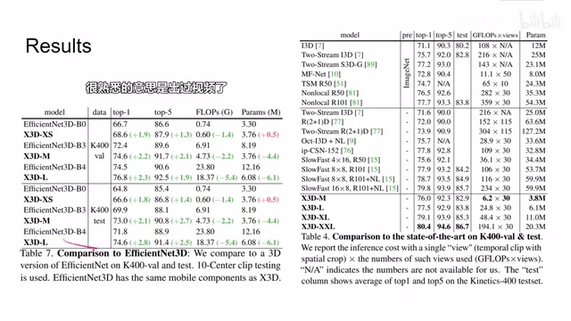
00:03:31–00:03:34 · 画面 01200:03:34–00:03:42 · 画面 013
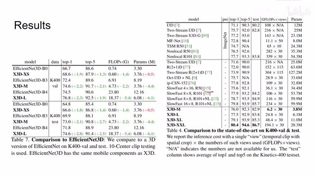
00:03:34–00:03:42 · 画面 01300:03:42–00:04:06 · 画面 014
00:03:42–00:04:06 · 画面 014合抱之木，生于毫末；九层之台，起于累土。这篇论文呢就是一个很有意思的例子。那么以上呢就是我对这篇论文非常快速的简单的分析。如果你对这篇论文的感兴趣，包括想了解它的代码实现细节，欢迎去查看它的原文。它的代码呢跟 SlowFast 也是放在一个仓库里面。那么感谢你的收看，再见。
00:04:06–00:04:06 · 画面 015
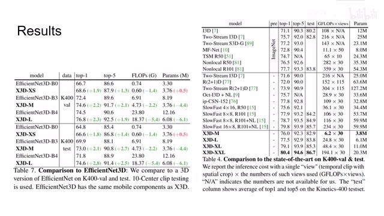
00:04:06–00:04:06 · 画面 015转写与来源说明 · 0 个自动复核提示
保留 9 个原始语音片段，0 个片段触发自动复核提示。提示仅用于定位可能的术语、重复或识别问题，不等于已确认错误。
讲解画面为源视频截图（640×360），不是可编辑 PPT 文件。全片按每秒 2 帧扫描内容变化，逐步展开页保留；连续动画保留代表画面。清晰度受源视频限制。
原视频：paper/合集_2026-10-16_新模型/[论文简析]X3D Expanding Architectures for Efficient Video Recognition[2004.04730].mp4
SHA-256：9543203b45c18645f06dfe9214b959b3736e82f32a1f3af4c2e6987b9efb4c3c
全文按视频语音与画面制作。原论文可从上方链接下载；完整资料包保留全文、原始逐字稿、字幕和校对记录。